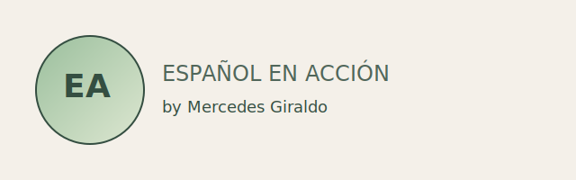

Material listo para usar en clase
"Soy Mercedes Giraldo, profesora de español especializada en clases
personalizadas para niños, adolescentes y adultos. Ofrezco clases de español
online por Zoom y a domicilio en Benidorm,
Villajoyosa, El Campello, San Juan, San Juan Playa, Mutxamel, San Vicente del
Raspeig, Alicante y Elche.
Mis clases se adaptan al nivel, ritmo y objetivos de cada alumno, con un
enfoque práctico y comunicativo. Trabajo refuerzo escolar,
conversación, preparación de exámenes y español para extranjeros, siempre con
atención individual y con cita previa

Rápidos